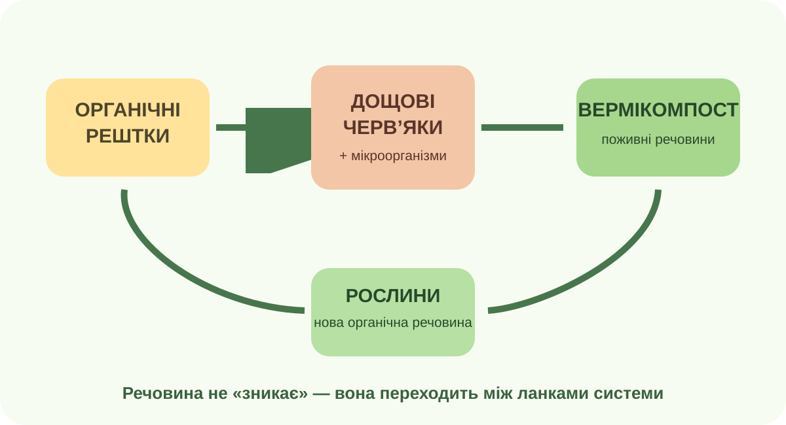

Де тут закінчується «жива» частина?
Уявіть ліс після дощу
Є дерево, вода в ґрунті, кисень, вуглекислий газ, мінеральні частинки, гриби, бактерії та сонячна енергія. Натисніть на твердження, яке найкраще описує систему.

Реальне фото: тропічний ліс у Бразилії. Спробуйте назвати мінімум три оболонки Землі, з якими ця екосистема безпосередньо обмінюється речовиною або енергією.
Черв’яки як географічний «двигун» речовини

Верміферма — система, де дощові черв’яки разом із мікроорганізмами переробляють органічні рештки. Це зручна модель зв’язку біосфери з ґрунтом.
Зберіть причинний ланцюг
Натискайте блоки в правильній послідовності.
Який зв’язок зникне, якщо прибрати одну ланку?
Вивітрювання і ґрунт
Корені проникають у тріщини, органічні кислоти та мікроорганізми змінюють мінеральний матеріал. Після відмирання організми додають органічну речовину.
Газообмін
Під час фотосинтезу рослини поглинають CO₂, а дихання та розкладання повертають вуглець до атмосфери.
Вода як середовище й потік
Організми споживають воду, повертають її через випаровування і транспірацію, а водні екосистеми залежать від світла, температури та розчинених речовин.
Чи можна «побачити» біосферу з космосу?

NASA MODIS: цвітіння фітопланктону біля Ньюфаундленду. Бірюзові візерунки показують, що біологічні процеси можуть проявлятися на масштабі сотень кілометрів.
Доказ чи припущення?
Оберіть, що безпосередньо підтримує цей супутниковий знімок.
Що станеться, якщо зменшити рослинний покрив?
| Процес | Модельний наслідок |
|---|---|
| Поглинання CO₂ | високе |
| Транспірація | висока |
| Захист ґрунту коренями | сильний |
| Ризик поверхневого змиву | низький |
Перевірте механізм
Рослинність змінюється сезонно — і це видно з орбіти
Global Enhanced Vegetation Index
MODIS вимірює індекс рослинності в глобальному масштабі. NASA показує, що зі зміною сезонів максимум рослинності «переміщується» між півкулями. Індекс не рахує дерева поштучно — він оцінює спектральний сигнал рослинного покриву.
Відкрити реальні карти NASAЗавдання на доказ
Теза: «Якщо супутникова карта стала зеленішою, це автоматично означає, що біорізноманіття зросло».
Як сезонність рослин впливає на атмосферний CO₂?
Під час перегляду
Зафіксуйте дві речі: 1) як CO₂ переміщується в атмосфері; 2) чому сезонний цикл рослинності особливо помітний у Північній півкулі.
Тепер формулюємо поняття
Біосфера
Біосфера — оболонка Землі, заселена живими організмами та перетворена їхньою діяльністю. Вона охоплює частини атмосфери, гідросфери та верхньої частини літосфери, де можливе життя.
Ключова ідея: межі біосфери не є «стіною». Її роботу видно через потоки речовини та енергії: фотосинтез, дихання, розкладання, ґрунтоутворення, транспірацію, водні харчові мережі.
Чи може біосфера існувати «окремо» від інших оболонок?
C — Claim
E — Evidence
R — Reasoning
§47 + міні-дослідження системи
Обов’язково
Опрацюйте §47. Оберіть одну систему біля дому: вазон, газон, компост, ставок, дерево у дворі. Намалюйте схему щонайменше з 5 стрілками обміну між живими організмами, водою, повітрям і мінеральною частиною середовища.
Електронний підручник / ВШО ↗Доказовий бонус
Знайдіть один приклад, де організми помітно змінюють неживу частину природи. Додайте фото/посилання та 3-реченнєвий CER: що відбулося, який є доказ, який механізм.